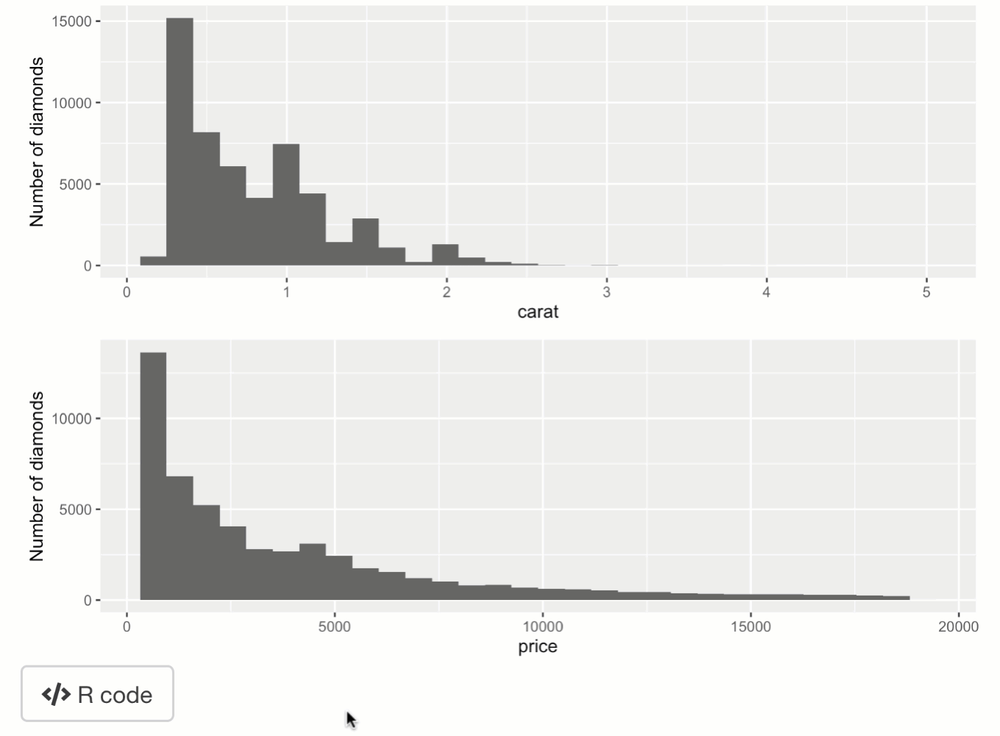

Code distribution
Carson Sievert & Joe Cheng
2019-06-28
03-code-distribution.Rmdshinymeta helps you distribute code to your users in two different ways: by either showing a code editor or by bundling both the code and results in a zip file for downloading.
Showing code
For an output
If your Shiny app has lots of outputs, then you probably want a subtle yet intuitive way to obtain the code for specific output(s). For this purpose, shinymeta provides metaIcon() function, which overlays a fontawesome shiny::icon() on a shiny output (upon hover). The icon works similar to an shiny::actionButton(), where an input value, tied to the icon, increases by one each time it is pressed. The name of that input is determined by the outputId of the shiny output it’s overlaying: input$OUTPUTID_shinymeta_icon. We recommend showing code for an output by supplying that code to displayCode() (which shows a shiny::modalDialog() that contains a shinyAce::aceEditor()) when the relevant metaIcon() is clicked:
library(shiny)
library(shinymeta)
library(ggplot2)
ui <- fluidPage(
metaIcon(plotOutput("p"))
)
server <- function(input, output) {
output$p <- metaRender(renderPlot, {
qplot(data = diamonds, x = carat) + ylab("Number of diamonds")
})
observeEvent(input$p_shinymeta_icon, {
code <- expandObjects(output$p(), .pkgs = "ggplot2")
displayEditor(code)
})
}
shinyApp(ui, server)
For numerous outputs
If you want to show code for a collection of outputs at once, we recommend using a shiny::actionButton() instead of metaIcon() to trigger the code display. Note that with displayEditor(), you are able to control both the modalDialog() as well as the shinyAce::aceEditor() that it contains.
library(shiny)
library(shinymeta)
library(ggplot2)
ui <- fluidPage(
plotOutput("p1", height = 200),
plotOutput("p2", height = 200),
actionButton("code", div(icon("code"), " R code"))
)
server <- function(input, output) {
output$p1 <- metaRender(renderPlot, {
qplot(data = diamonds, x = carat) + ylab("Number of diamonds")
})
output$p2 <- metaRender(renderPlot, {
qplot(data = diamonds, x = price) + ylab("Number of diamonds")
})
observeEvent(input$code, {
code <- expandCode({
library(ggplot2)
gridExtra::grid.arrange(
!!output$p1(),
!!output$p2()
)
})
displayEditor(
code,
title = "ggplot2 code",
size = "s",
fontSize = 16,
height = "200px",
theme = "solarized_dark"
)
})
}
shinyApp(ui, server)
Bundling code and results
One of the downsides to just showing code is that it doesn’t guarantee the result will be reproduced, because the user may not have easy access to a suitable computational environment for running the code. One way to combat this is to provide both the code and the results as one deliverable. Moreover, by leveraging the power of rmarkdown, you can insert your code into a larger template that produces a high-quality HTML/pdf/word report of your user’s Shiny experience. shinymeta provides two helpers that make it easier to produce such reports from both R scripts (buildScriptBundle()) and rmarkdown templates (buildRmdBundle()). Both of these functions produce a (.R or .Rmd) source file, optionally run rmarkdown::render() on the source file (plus external resources) you provide it, compresses those results into a zip file, and provides shiny::Progress indications during all these steps. To provide the user control over when this build step occurs, you want to call these functions inside a downloadHandler() that’s linked to either a downloadButton() or downloadLink().
The quickest and easiest way to bundle your code with the results is to use buildScriptBundle(). Just give it the code you want to run and the zip filename from the downloadHandler(). You can also control the way the R script is rendered through the render_args argument (here, producing a pdf document instead of the HTML default)
library(shiny)
library(shinymeta)
library(ggplot2)
ui <- fluidPage(
downloadButton("download_script", "Download script"),
plotOutput("p1"),
plotOutput("p2")
)
server <- function(input, output) {
output$p1 <- metaRender(renderPlot, {
qplot(data = diamonds, x = carat) + ylab("Number of diamonds")
})
output$p2 <- metaRender(renderPlot, {
qplot(data = diamonds, x = price) + ylab("Number of diamonds")
})
output$download_script <- downloadHandler(
filename = "ggcode.zip",
content = function(file) {
ggcode <- expandCode({
library(ggplot2)
gridExtra::grid.arrange(
!!output$p1(),
!!output$p2()
)
})
buildScriptBundle(ggcode, file, render_args = list(output_format = "pdf_document"))
}
)
}
shinyApp(ui, server)Compared to buildScriptBundle(), buildRmdBundle() is more powerful, but also more complex. To use it, you’ll need an Rmd template on disk. That template should contain one or more ‘variables’ surrounded in {{}}. For example, consider this basic template, and suppose it’s saved in a file named report.Rmd. It has just one variable, {{code}}, which we want to supply with the code represented by ggcode (from the previous app).
---
title: "My ggplot2 code"
output:
html_document:
code_folding: "hide"
---
```{r setup, include=FALSE}
knitr::opts_chunk$set(message = FALSE)
```
```{r, out.width="100%"}
{{code}}
```
We could, then, modify the last Shiny app to use buildRmdBundle() instead of buildScriptBundle(). Notice how the names of the vars argument should match up with variables (e.g. {{code}}) from the Rmd template.
buildRmdBundle("report.Rmd", file, vars = list(code = ggcode))It’s worth noting that, instead of using parameterized reports (i.e., the usual way to generate downloadable reports), buildRmdBundle() uses knitr::knit_expand() to fill in the Rmd template, so the user gets not only the report, but also the source file with the essential logic to reproduce that report.